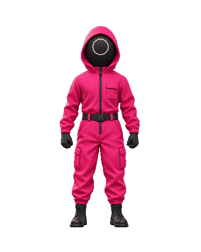

Six motion studies: a pink hooded guard with a black circle mask. Each loop has 48 frames, a 2-second duration and the same first/last pose. This review does not replace the game mascot yet.

01 · Breathing Subtle fabric motion; feet and body scale stay fixed. GIF · WebP02 · Looking around Small head tilts and restrained arm movement. GIF · WebP03 · Hand signal Raised forearm, a short signal, then return to rest. GIF · WebP04 · Anticipation Fists come inward while waiting for the wheel. GIF · WebP05 · Celebration Both arms rise with a small hop and changing shadow. GIF · WebP06 · Disappointment A restrained head dip followed by recovery. GIF · WebP